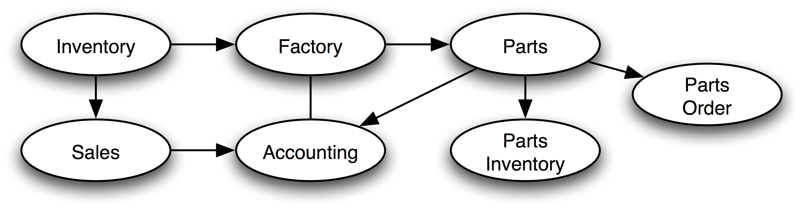

Jboss Admin Tutorial : Jms
- Framework for reliable both synchronous and asynchronous communication between distributed components
- Guaranteed push-based delivery
Peer to peer
- One to One, One to Many, Many to Many
- Loosely coupled (standard message formats)
- JMS Implementation provides necessary services to its clients
- JMS is unlike RMI, which is tightly coupled. In JMS, The sender and the receiver need to know only which message format and which destination to use.
- JMS is unlike email, which is people oriented. JMS is meant to serve distributed software applications and components, although it is also used for local (in-JVM) messaging.
- Allows loosely coupled, reliable, asynchronous interactions among Java EE components and legacy systems capable of messaging
- Is reliable, it ensure that a message is delivered once and only once.
- Application clients, EJBs, and web components can send and receive JMS messages
- Message-driven beans enable the asynchronous (possibly concurrent) consumption of messages, making it easy to plug in new business event handlers into an existing deployment
- Message send and receive operations can participate in distributed transactions, which allow JMS operations and database accesses to take place within a single transaction
- JMS can be used outside the context of a full-blown app server
When no dependency between components is important
- Compile-time dependency (loose coupling)
- Run-time dependency (components run independently)
- When we need asynchronous yet reliable communication
Consider the following usage scenario:
Components of an enterprise application for an automobile manufacturer can use the JMS API in situations like these:
- The inventory component can send a message to the factory component when the inventory level for a product goes below a certain level so that the factory can make more cars
- The factory component can send a message to the parts components so that the factory can assemble the parts it needs
- The parts components in turn can send messages to their own inventory and order components to update their inventories and to order new parts from suppliers
- Both the factory and the parts components can send messages to the accounting component to update their budget numbers
- The business can publish updated catalog items to its sales force
- JMS clients are the programs (possibly external) or components, written in the Java programming language, that produce and consume messages. Any Java EE application component can act as a JMS client.
- A JMS provider is a messaging system that implements the JMS interfaces and provides administrative and control features. JBoss Messaging is such provider.
- Messages are the objects that communicate information between JMS clients.
Administered objects are preconfigured JMS objects created by an administrator for the use of clients:
- Connection Factories
- Destinations
Point to Point
- A sender (producer) sends a message addressed to a specific queue
- A receiver (consumer) consumes the message from the queue established to hold its messages
- Queues retain all messages sent to them until the messages are consumed or until the messages expire
- Each message has only one consumer
- A sender and a receiver of a message have no timing dependencies. The receiver can fetch the message whether or not it was running when the client sent the message
- The receiver acknowledges the successful processing of a message
Publish and Subscribe
- Publisher clients publish messages to one or more message topics
- Subscriber clients subscribe to one or more message topics and receive messages when they are sent to them
- The topics hold the messages as long as it takes to deliver them to all currently subscribed clients
- Each message can have multiple consumers
- Publishers and subscribers have a timing dependency. A client that subscribes to a topic can consume only messages published after the client has created a subscription, and the subscriber must continue to be active in order for it to consume messages (unless it holds a durable subscription)
-
Synchronous: A subscriber or a receiver explicitly fetches the message from the destination by calling the blocking
receivemethod (with support for timeouts) -
Asynchronous: A client can register a message listener with a consumer. Whenever a message arrives at the destination, the JMS provider delivers the message by calling the listener’s
onMessagemethod, which acts on the contents of the message
We will use an asynchronous JMS client in the JMS lab.
Configuration files can be found in
deploy/messagingdirectory of your JBoss server.-
connection-factories-service.xml: Define connection factories -
destinations-service.xml: Define destinations (Topic,Queue) -
hsqldb-persistence-service.xml: Define persistence for messages (The messaging service stores all messages before delivering them) -
jms-ds.xml: JMSProviderLoader and JmsXA inflow resource adaptor connection factory binding configuration -
legacy-service.xml: JMSProviderLoader and JmsXA inflow resource adaptor connection factory binding configuration -
messaging-jboss-beans.xml: Configures JMS security and management beans -
messaging-service.xml: Contains the server’s configuration and core messaging services -
remoting-bisocket-service.xml: Contains JMS remoting configuration
-
-
New JMS connections are created by
ConnectionFactory. JBoss AS 5 ships already configured, non-clusterable and clusterable connection factories
-
Non-clustered are bound to the following JNDI contexts:
/ConnectionFactory,/XAConnectionFactory,java:/ConnectionFactory,java:/XAConnectionFactory -
Clustered are bound to the following JNDI contexts:
/ClusteredConnectionFactory,/ClusteredXAConnectionFactory,java:/ClusteredConnectionFactory,java:/ClusteredXAConnectionFactory
-
Non-clustered are bound to the following JNDI contexts:
-
Configuration located in
deploy/messaging/connection-factories-service.xml
![[Note]](../images/note.png) | Note |
|---|---|
Factories that are bound to the |
You can find an example on how to create a ConnectionFactory inside
deploy/messaging/connection-factories-service.xml
-
The
deploy/messaging/destinations-service.xmlcontains preconfigured destinations deployed during server startup To create your own queue called
exampleQueue, you could either add it todeploy/messaging/destinations-service.xmlor deploy your ownexampleQueue-service.xml:<server> <mbean code="org.jboss.jms.server.destination.QueueService" name="jboss.messaging.destination:service=Queue,name=exampleQueue" xmbean-dd="xmdesc/Queue-xmbean.xml"> <depends optional-attribute-name="ServerPeer">jboss.messaging:service=ServerPeer</depends> </mbean> </server>Deploying it binds this queue to JNDI as
/queue/exampleQueue:13:27:57,421 INFO [QueueService] Queue[/queue/exampleQueue] started, fullSize=200000, pageSize=2000, downCacheSize=2000
Similarly, to create your own topic called
exampleTopic, you could either add it todeploy/messaging/destinations-service.xmlor create your ownexampleTopic-service.xml:<server> <mbean code="org.jboss.jms.server.destination.TopicService" name="jboss.messaging.destination:service=Topic,name=exampleTopic" xmbean-dd="xmdesc/Topic-xmbean.xml"> <depends optional-attribute-name="ServerPeer">jboss.messaging:service=ServerPeer</depends> <depends>jboss.messaging:service=PostOffice</depends> </mbean> </server>Deploying it binds this topic to JNDI as
/topic/exampleTopic:13:27:57,890 INFO [TopicService] Topic[/topic/exampleTopic] started, fullSize=200000, pageSize=2000, downCacheSize=2000
-
You can inspect destination attributes via the JMX console in the
jboss.messaging.destinationdomain. Here is some information about attribute you can configure for a destination, for more info on the additional attributes, see http://jboss.org/jbossmessaging/docs.html
-
name: name of the queue -
JNDIName: JNDI name where the queue is bound -
DLQ: Dead Letter Queue to use. It’s a special destination where the messages are sent when the server has attempted to deliver them unsuccessfully more than a certain number of times -
ExpiryQueue: is a special destinations where messages are sent when they have expired -
RedeliveryDelay: redelivery delay to be used for this queue -
MaxDeliveryAttempts: number of times a delivery attempt will happen before the message goes to the DLQ -
SecurityConfig: Allows you to determine which roles can read, write and create on the destination -
FullSize: maximum number of messages held by the queue or the topic in memory at any given time
-
- JBoss Messaging bridge
- Persistence service
- Securing JMS destinations
- Route messages from one destination to another. Works also across different message servers.
| Note |
|---|---|
The source and target servers do not have to be in the same cluster which makes bridging suitable for reliably sending messages from one cluster to another, for instance across a WAN, and where the connection may be unreliable. |
An simple example on how to configure the bridge:
<mbean code="org.jboss.jms.server.bridge.BridgeService"
name="jboss.messaging:service=Bridge,name=TestBridge"
xmbean-dd="xmdesc/Bridge-xmbean.xml">
<depends optional-attribute-name="SourceProviderLoader">
jboss.messaging:service=JMSProviderLoader,name=JMSProvider <!--  -->
</depends>
<depends optional-attribute-name="TargetProviderLoader">
jboss.messaging:service=JMSProviderLoader,name=JMSProvider <!--
-->
</depends>
<depends optional-attribute-name="TargetProviderLoader">
jboss.messaging:service=JMSProviderLoader,name=JMSProvider <!--  -->
</depends>
<attribute name="SourceDestinationLookup">/queue/A</attribute> <!--
-->
</depends>
<attribute name="SourceDestinationLookup">/queue/A</attribute> <!--  -->
<attribute name="TargetDestinationLookup">/queue/B</attribute> <!--
-->
<attribute name="TargetDestinationLookup">/queue/B</attribute> <!--  -->
<attribute name="MaxBatchSize">5</attribute> <!--
-->
<attribute name="MaxBatchSize">5</attribute> <!--  -->
<attribute name="MaxBatchTime">-1</attribute> <!--
-->
<attribute name="MaxBatchTime">-1</attribute> <!--  -->
</mbean>
-->
</mbean>
| Source destination provider |
| Target destination provider. We can change this to reach a remote server. |
| JNDI lookup for the source destination |
| JNDI lookup for the target destination |
| Maximum number of messages to consume from the source before sending to the target |
|
Maximum time to wait (in ms) before sending a batch to the target even if MaxBatchSize is not exceeded. -1 means wait forever
|
Save this configuration file as jbm-bridge-service.xml in deploy/messaging
Adding a remote provider
Create the following
jbm-remote-service.xmlin thedeploy/messagingfolder:<mbean code="org.jboss.jms.jndi.JMSProviderLoader" name="jboss.messaging:service=JMSProviderLoader,name=MyRemoteJMSProvider,server=localhost"> <!-- -->
<attribute name="ProviderName">RemoteXAConnectionFactory</attribute>
<attribute name="ProviderAdapterClass">org.jboss.jms.jndi.JNDIProviderAdapter</attribute>
<attribute name="FactoryRef">XAConnectionFactory</attribute>
<attribute name="QueueFactoryRef">XAConnectionFactory</attribute>
<attribute name="TopicFactoryRef">XAConnectionFactory</attribute>
<!-- -->
<attribute name="Properties">
java.naming.factory.initial=org.jnp.interfaces.NamingContextFactory
java.naming.factory.url.pkgs=org.jboss.naming:org.jnp.interfaces
java.naming.provider.url=remoteServerIPAddress:1099
</attribute>
</mbean> This part contains the Factoryconfiguration of the remote server This part contains the JNDI properties to reach the remote server. Replace remoteServerIPAddressby the IP of the remote server
Then you will just have to make a change in the jbm-remote-service.xml:
<mbean>
...
<depends optional-attribute-name="SourceProviderLoader">
jboss.messaging:service=JMSProviderLoader,name=MyRemoteJMSProvider,server=remoteserver <!-- -->
</depends>
...
</mbean>
|
We specify here that we will use MyRemoteJMSProvider as a source
|
-
By default, persistence service is provided by Hypersonic DB and its datasource
DefaultDS -
Configuration is located in
deploy/messaging/xxx-persistence-service.xmlwherexxxis the database name
In this example, we’re going to use MySQL for the persistence of our messages:
-
Create a datasource in
mysql-ds.xml -
Remove
hsqldb-persistence-service.xmlfrom thedeploy/messagingfolder -
Then, you need to create
mysql-ds-persistence.xmlin thedeploy/messagingfolder. Do not start from scratch, you can find an example in the%JBOSS_HOME%/docs/examples/jms
Reduced version of mysql-persistence-service.xml:
...
<server>
<mbean code="org.jboss.messaging.core.jmx.JDBCPersistenceManagerService"
name="jboss.messaging:service=PersistenceManager"
xmbean-dd="xmdesc/JDBCPersistenceManager-xmbean.xml">
<depends>jboss.jca:service=DataSourceBinding,name=MySqlDS</depends>
<depends optional-attribute-name="TransactionManager">jboss:service=TransactionManager</depends>
<!-- The datasource to use for the persistence manager -->
<attribute name="DataSource">java:/MySqlDS</attribute>
<!-- If true will attempt to create tables and indexes on every start-up -->
<attribute name="CreateTablesOnStartup">true</attribute>
<!-- If true then we will automatically detect and reject duplicate messages sent during failover -->
<attribute name="DetectDuplicates">true</attribute>
<!-- The size of the id cache to use when detecting duplicate messages -->
<attribute name="IDCacheSize">500</attribute>
<attribute name="SqlProperties">...</attribute>
<!-- The maximum number of parameters to include in a prepared statement -->
<attribute name="MaxParams">500</attribute>
</mbean>
<mbean code="org.jboss.messaging.core.jmx.MessagingPostOfficeService"
name="jboss.messaging:service=PostOffice"
xmbean-dd="xmdesc/MessagingPostOffice-xmbean.xml">
<depends optional-attribute-name="ServerPeer">jboss.messaging:service=ServerPeer</depends>
<depends>jboss.jca:service=DataSourceBinding,name=MySqlDS</depends>
<depends optional-attribute-name="TransactionManager">jboss:service=TransactionManager</depends>
<!-- The name of the post office -->
<attribute name="PostOfficeName">JMS post office</attribute>
<!-- The datasource used by the post office to access it's binding information -->
<attribute name="DataSource">java:/MySqlDS</attribute>
<!-- If true will attempt to create tables and indexes on every start-up -->
<attribute name="CreateTablesOnStartup">true</attribute>
<attribute name="SqlProperties">...</attribute>
<!-- This post office is non clustered. If you want a clustered post office then set to true -->
<attribute name="Clustered">false</attribute> <!-- -->
<!-- All the remaining properties only have to be specified if the post office is clustered.
You can safely comment them out if your post office is non clustered -->
<!-- The rest is commented because Clustered is set to false -->
...
</mbean>
<mbean code="org.jboss.jms.server.plugin.JDBCJMSUserManagerService"
name="jboss.messaging:service=JMSUserManager"
xmbean-dd="xmdesc/JMSUserManager-xmbean.xml">
<depends>jboss.jca:service=DataSourceBinding,name=MySqlDS</depends>
<depends optional-attribute-name="TransactionManager">jboss:service=TransactionManager</depends>
<attribute name="DataSource">java:/MySqlDS</attribute>
<attribute name="CreateTablesOnStartup">true</attribute>
<attribute name="SqlProperties">...</attribute>
</mbean>
</server>
|
If you’re not running a clusterable solution, make sure to set Clustered attribute to false
|
Run the command-line chat client from multiple terminals (Command Prompts on Windows) to test how JBoss manages publish-subscribe JMS
-
Use the
topic/testTopic - Create your own topic
- Run from multiple machines
-
Use the
-
You will need to set
JBOSS_HOMEenvironment variable to run thechat/run.shscript (run.baton Windows)